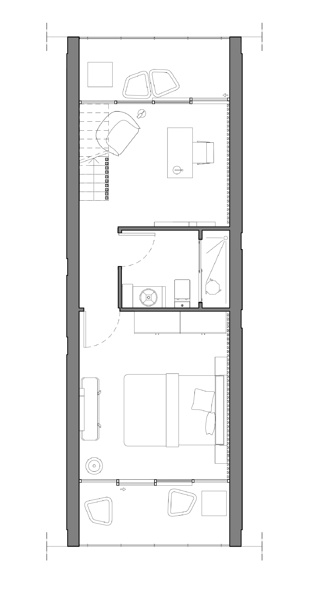

Il progetto prevede la realizzazione di una suite d'albergo partendo da un modello base. L'appartamento di tipologia B, si sviluppa su due piani. Il punto focale di Pausa Verticale è il ricreare un ambiente quanto più rilassante e accogliente attraverso l'utilizzo di colori tenui, tessuti morbidi e illuminazione soffusa. Queste suggestioni sono però attenuate dalla verticalità dei divisori e della boiserie composta da listelli di noce. Per scoprire di più clicca su uno dei due piani.
Piano 0
Piano -1
